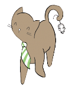
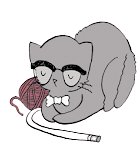

Самые интересные фотографии котов, кошек и котят
meow-gallery »САМЫЕ ПОПУЛЯРНЫЕ КЛИЧКИ КОШЕК
Ешка
Ева
Альф
Рокси
Симба
Тимка
Барсик
Муська
Анфиса
Ириска
Макс
Кокс
Вася
Кузя
Том
Марсик
Алекс
Лева
Цезарь
Сэм
Айс
Снежок
Джек
Каспер
Ника
Маркиз
Ася
Зевс
Милка
Тоша
Мурка
Джесси
Жужа
Мурзик
Багира
Адель
Алиса
Сима
Боня
Дымка
Даша
Скай
Соня
Феликс
Кити
Матильда
Буся
Синди
Тайсон
ВОЗРАСТ КОШКИ ПО ЧЕЛОВЕЧЕСКИМ МЕРКАМ ЖИЗНИ
СТАДИЯ ЖИЗНИ



КОТЕНОК
ВЗРОСЛЫЙ
ПОЖИЛОЙ
Котик
1
2
3
4
5
6
7
8
9
10
11
12
13
14
15
16
17
18
19
20
Человек
7
13
20
26
35
40
44
48
52
56
60
64
68
72
76
80
84
88
92
96